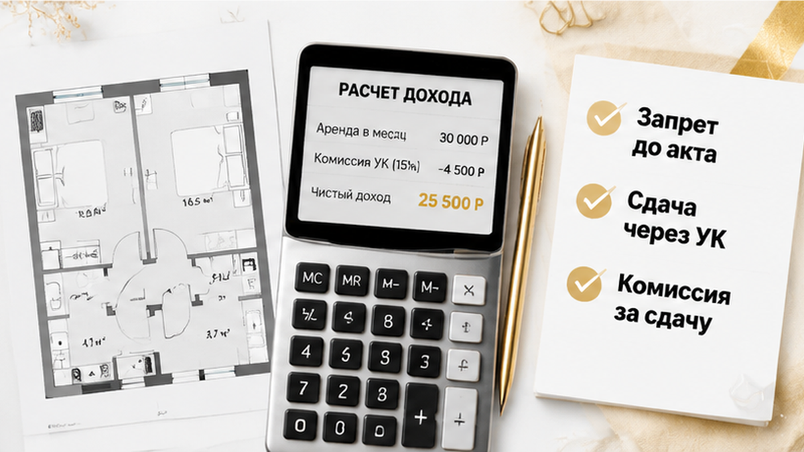
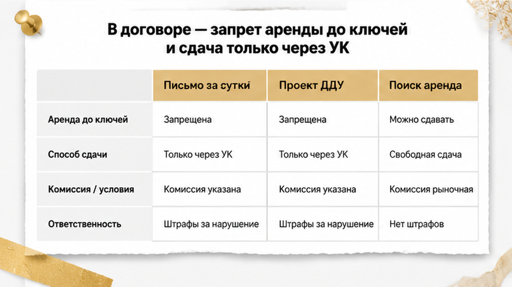
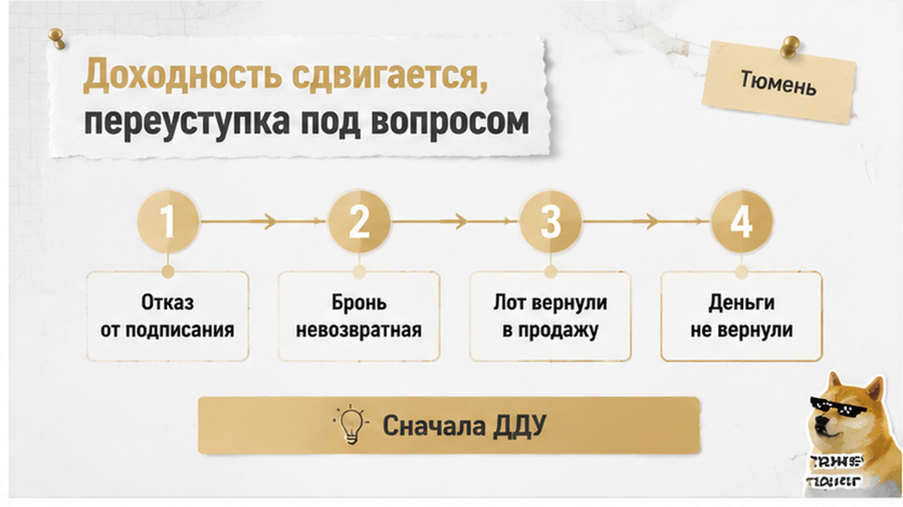
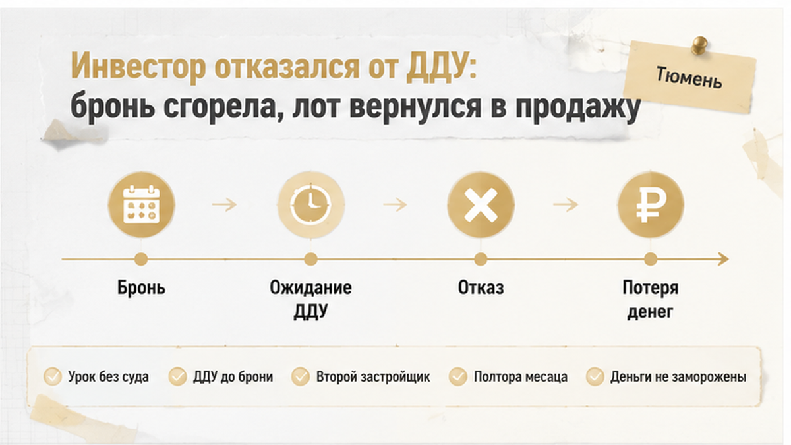
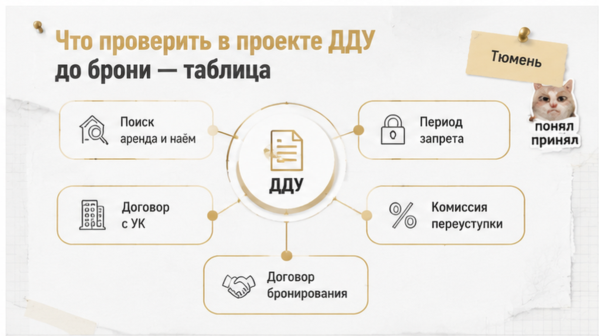

Инвестор из Тюмени внёс плату за бронь однушки под сдачу, а через три недели прочитал присланный проект ДДУ и подписывать отказался. В тексте нашлось сразу три вещи, о которых в офисе продаж не сказали ни слова: сдавать квартиру нельзя до передачи ключей и регистрации права, после ключей — только через сервис застройщика с комиссией, а выйти переуступкой можно лишь с согласия застройщика и за процент от цены. Деньги за бронь ему не вернули — так был написан договор бронирования, который он подписал первым, а прочитал вторым. Мужчина около сорока, покупал не квартиру для жизни, а инструмент: цена лота, ежемесячный платёж, ставка аренды после ввода, срок окупаемости. Модель сходилась ровно до того вечера, когда на почту упало письмо с вложениями. Лот вернулся в продажу, а инвестор пошёл к другому застройщику с одним новым требованием: полный проект ДДУ до любых денег.
Я Святослав Шакин, «The Риэлтор», Тюмень. Разбираю новостройки по документам, а не по обещаниям в переговорке. Свежие разборы и сигналы по рынку — в Telegram @Tyumen_Rieltor и в MAX: max.ru/id561413315447_biz.

Заходил он спокойно и по-взрослому. Однушка — самый ходовой формат под аренду, дом на западе города, застройщик на слуху, ипотека предварительно одобрена. Весь разговор в офисе продаж занял меньше часа: планировка, срок ввода, размер платежа. Плату за бронь внёс в тот же день, чтобы лот не ушёл. «Квартира на паузе, документы подготовим», — сказал менеджер, и на этом деловая часть закончилась.
Дома он собрал таблицу. Слева цена лота и платёж по ипотеке, справа ожидаемая ставка аренды после сдачи дома, внизу срок окупаемости. Фраза про горячий рынок аренды легла в модель как факт: на той же неделе у меня в канале выходил сигнал «Аренда в Тюмени. Квартир море — а снять нечего».
Только дефицит съёмных квартир сегодня — это контекст спроса, а не гарантия ставки в конкретном ЖК через год-два. Цену аренды определит предложение вокруг дома к моменту ввода: сколько таких же однушек из соседних корпусов выйдет на рынок в один месяц и сколько из них куплено такими же инвесторами с такой же таблицей.
Вторая ошибка серьёзнее. Он считал доход с первого месяца после ключей и вообще не считал период до ключей: ни отсрочки, ни ремонта, ни простоя, ни комиссии за сдачу. А главное — в таблице не было ни строчки из договора, который он ещё не читал. Одобренная ипотека и внесённая бронь ощущаются как «сделка почти есть», хотя до подписания ДДУ остаётся несколько шагов, и любой из них разворачивает сделку — про такую цепочку до подписания договора я разбирал отдельно.
Письмо пришло вечером, за сутки до назначенного подписания: сам ДДУ, приложения, описание объекта, порядок передачи, документы по управлению домом. Обычно на этой стадии смотрят три места — цену, срок передачи и номер квартиры, а остальное листают колесом мыши. Он открыл файл целиком и стал искать слово «аренда»: покупал-то под сдачу.
Нашёл четыре условия, которые в офисе не прозвучали ни разу.
Он позвонил мне в десять вечера с формулировкой «мне запрещают распоряжаться моей квартирой». Как ни странно, самый страшный на вид пункт — первый — оказался в этом списке наименее опасным. А ломают инвестиционную модель три остальных: они работают уже за пределами стройки, в жизни собственника, когда ключи получены и ипотека платится каждый месяц.
И увидеть их можно только в полном проекте договора с приложениями — не в буклете, не в презентации и не со слов менеджера: скрытые условия обычно живут именно там.

Мы сели за проект договора вдвоём: он с распечаткой, я с поиском по тексту. Первым вылезло то самое условие — участник не вправе сдавать объект в аренду или наём до передачи по акту и регистрации права собственности.
«То есть мне запретили зарабатывать на моей квартире?» — спросил он.
Не запретили. До передаточного акта квартиры у дольщика ещё нет — есть право требования по ДДУ, а сдаёт жильё собственник. Даже после акта, но до записи в ЕГРН, аренда стоит на шатком основании. Так что эта строчка не отнимает у инвестора ничего сверх того, что и так вытекает из статуса стройки, — как и в истории, когда ключи переносят на год, а деньги лежат на эскроу.
Интереснее оказалось не в самом ДДУ, а в приложениях. Согласование арендатора с застройщиком или управляющей компанией. Сдача только через сервис аренды застройщика — с комиссией. Отдельный договор с УК, подписываемый вместе с актом.
Вот это уже не про стройку. Это про тот период, когда квартира уже ваша, ипотека платится, а жилец найден. И читать такие пункты надо построчно, привязывая каждый к событию: до ввода дома, до акта передачи, до регистрации права в ЕГРН — или бессрочно после неё. Один и тот же абзац бывает нейтральной формальностью, а бывает условием, которое годами забирает процент с вашей аренды.
Сказать инвестору бодрое «любой запрет аренды недействителен» я не мог. Условия, ущемляющие права покупателя-физлица, ничтожны, но позиции Верховного Суда о том, что такой запрет незаконен всегда, в доступной практике нет: всё зависит от формулировки, периода и статуса участника. Инициатива 2026 года про навязанную управляющую компанию — пока законопроект, а не действующая норма. Строить доходность на «скоро запретят» — то же самое, что считать аренду по обещанию менеджера.
И увидеть всё это можно только в полном проекте договора с приложениями. В презентации таких страниц не бывает.

Он открыл свою таблицу и начал править цифры. В исходной модели аренда стартовала почти сразу после сдачи дома. По договору выходила другая цепочка: ввод, акт, регистрация права, ремонт, поиск первого жильца. Это не месяц, а заметная отсрочка дохода — и всё это время идёт ипотечный платёж.
Дальше комиссия сервиса аренды, если сдавать разрешено только через него. Дальше налоги. По отдельности — мелочь, вместе — другой срок окупаемости.
«Хорошо, — сказал он. — Не буду сдавать до ключей. Выйду переуступкой».
Мысль здравая. Уступить право требования по ДДУ можно после полной оплаты цены либо с переводом долга, в промежутке между регистрацией договора и подписанием передаточного акта; сам договор уступки тоже регистрируется. Механизм рабочий.
Но если в тексте стоит согласие застройщика на уступку и плата за это согласие, свободного выхода уже нет. По рыночным обзорам такие комиссии называют в диапазоне примерно 1–3%, иногда до 5% — это оценки практики, а не тариф из закона: в конкретном договоре может стоять что угодно или вообще ничего. Плюс при ипотеке потребуется согласие банка. Для инвестора, у которого выход — часть стратегии, это второй ключ от сделки, и лежит он не в его кармане.
Мы пересчитали модель без эмоций, по строчкам договора. Получилась не катастрофа, а другая доходность и другая скорость выхода. Просто такие цифры честнее увидеть до брони, а не за сутки до подписания.
Проект договора вообще умеет удивлять не только арендой: в другой тюменской истории дольщикам прислали новый ДДУ после смены юрлица — и там тоже всё решал текст, а не разговор в офисе продаж.

Спорить он не стал. Не пошёл в офис требовать «уберите пункт», не поехал ругаться с руководителем отдела. Написал менеджеру в переписке: на таких условиях подписывать не буду, верните плату за бронь.
Ответ пришёл в тот же вечер и был короткий: «Бронирование удерживается по условиям договора». Через несколько дней лот снова висел в продаже — та же однушка, та же цена, только смотрел её уже кто-то другой.
По деньгам всё решила бумага, которую он подписал первой, а прочитал второй. Договор бронирования — это не ДДУ. Если внесён аванс в счёт цены квартиры — одна история. Если оплачена услуга — другая: по статье 32 закона о защите прав потребителей отказаться можно, а удержать вправе только фактически понесённые и подтверждённые расходы. Слова «бронь невозвратная» в бланке сами по себе такого права не дают. Смотреть надо текст, а не заголовок бланка.
В суд он не пошёл — сумма брони стоила меньше, чем месяц его времени. Назвал это платой за урок. Теперь порядок у него обратный: сначала полный проект ДДУ со всеми приложениями, потом деньги. Не «типовая форма», не презентация, а тот самый файл, который положат на подпись. Один застройщик прислал за сутки. Второй тянул неделю и прислал без приложений — этого он вычеркнул сам.
И вот что здесь важнее всего. Пункт «не сдавать до передачи ключей» ловушкой не был. Ловушкой стала связка: отсрочка дохода до акта плюс обязательный сервис аренды с комиссией плюс согласие застройщика на переуступку. Поодиночке каждое условие выглядит терпимо. Вместе они переписывают экономику покупки.
Запрет на аренду в ДДУ до ключей — законное следствие статуса строящегося объекта или способ удержать инвестора на невыгодных условиях? Напишите в комментариях, если встречали такой пункт в тюменском договоре: интересно, у скольких он шёл в комплекте с обязательной управляющей компанией.

Порядок простой: сначала документы, потом деньги. До оплаты брони я прошу четыре файла — проект ДДУ, приложения к нему, проект договора с управляющей компанией и договор бронирования. Дальше поиск по тексту: «аренда», «наём», «субаренда», «коммерческое использование», «согласование арендатора», «штраф». Каждое найденное условие привязываю к периоду: до ввода дома, до акта передачи, до регистрации права в ЕГРН — или бессрочно после неё.
| Что ищу в проекте ДДУ | Чем это грозит инвестору | Что прошу письменно до подписания |
|---|---|---|
| Пункт про аренду и наём: период запрета | Ограничение после регистрации права — вы не свободны в распоряжении своей квартирой | До какой даты или события действует пункт |
| Обязательный договор с УК или сервисом аренды | Комиссия режет чистую доходность, выбора управляющего может не остаться | Проект договора с УК и размер комиссии за сдачу |
| Переуступка: согласие застройщика, комиссия | Выход из проекта дорожает: рыночные оценки 1–3%, встречается до 5% | Размер платы за согласие и срок его выдачи |
| Срок передачи объекта по договору | Аренда стартует не раньше акта и ремонта — окупаемость сдвигается | Дата передачи из текста ДДУ, а не из рекламы |
| Договор бронирования: услуга или аванс | При отказе от сделки деньги могут удержать по условиям бланка | Основание и размер возможных удержаний |
По переуступке — деталь, о которую спотыкаются чаще всего. Продать право требования можно после полной оплаты цены либо с переводом долга и только до подписания акта передачи; сам договор уступки регистрируется. Если сверху ДДУ требует согласия застройщика, а квартира в ипотеке, понадобится ещё и согласие банка. Это не запрет. Это время и деньги, которых в таблице доходности обычно нет.
И чего я не утверждаю. Что любой запрет аренды в ДДУ ничтожен — оценивать нужно конкретную формулировку и период. Что есть решение Верховного Суда «запрет аренды в ДДУ всегда незаконен» — в доступной практике я такого не видел. Что застройщику уже нельзя навязывать свою УК: обсуждаемая в 2026 году инициатива на сегодня остаётся инициативой, а не нормой. И что дефицит съёмных квартир в Тюмени гарантирует вам ставку в конкретном ЖК через два года — спрос есть, но это контекст рынка, а не строка в вашем расчёте.
Разбираю такие проекты ДДУ по документам, а не по презентациям. Свежие тюменские кейсы и сигналы по новостройкам — в Telegram: t.me/Tyumen_Rieltor. Удобнее в MAX — пишите туда: max.ru/id561413315447_biz. Пришлите файл договора, посмотрю пункты про аренду, УК и переуступку.
История закончилась потерей брони — и не закончилась замороженными деньгами на десять лет вперёд. Инвестор увидел ограничения до подписания ДДУ, а не после ключей. Вот та ручка, за которую здесь можно взяться: не платить за бронь, пока на руках нет полного проекта договора с приложениями; отличать нейтральный пункт «до передачи объекта» от условий, которые работают уже после регистрации права; считать доходность с отсрочкой до ключей, ремонтом, простоем, комиссией УК и налогами.
Разница между удачной покупкой и замороженными деньгами обычно не в доме и не в этаже. Она в том, читал человек договор до оплаты или после. Второй лот этот инвестор взял через полтора месяца, у другого застройщика: пункт про аренду касался только периода до акта передачи, обязательного сервиса сдачи не было, согласие на переуступку выдавали без платы. Условия оказались нормальными — просто он их сначала прочитал.